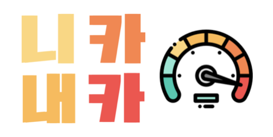
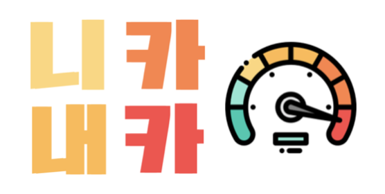
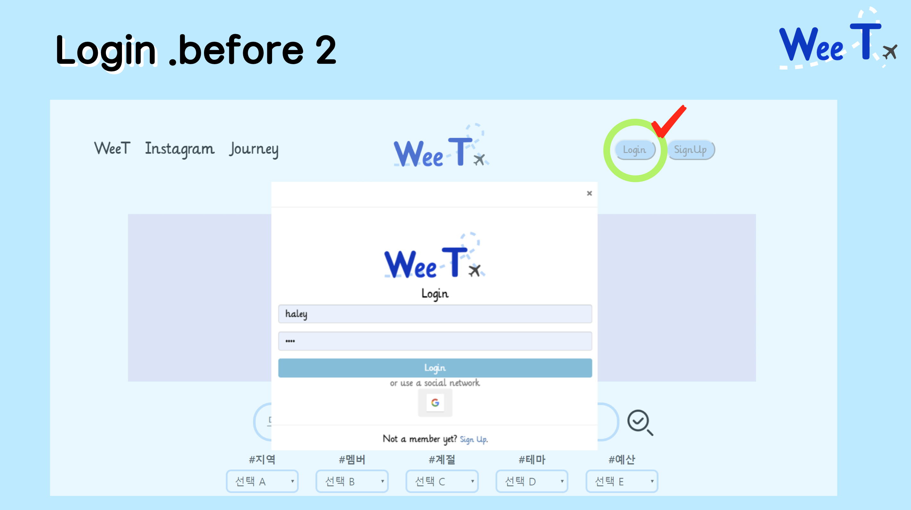
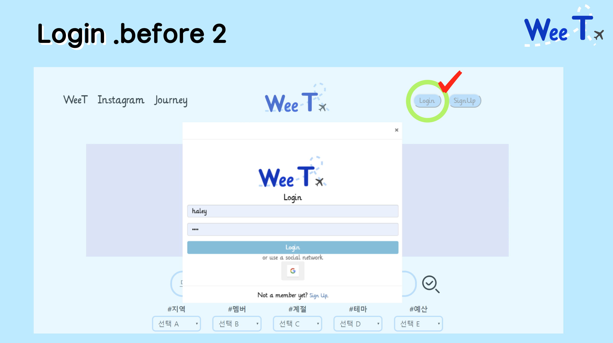
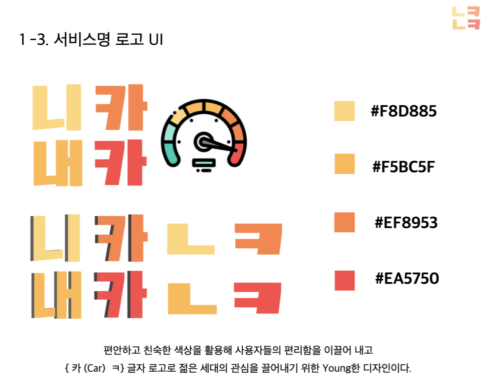
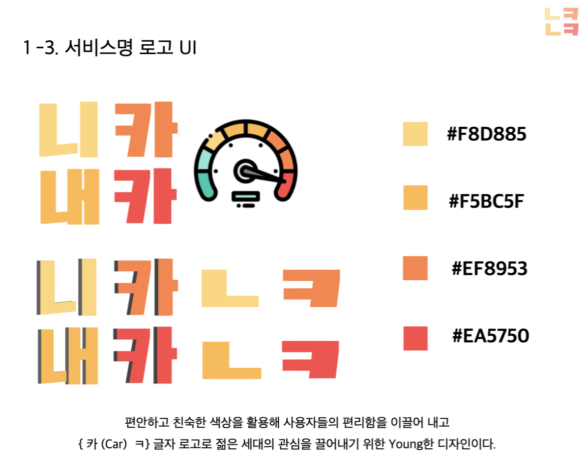
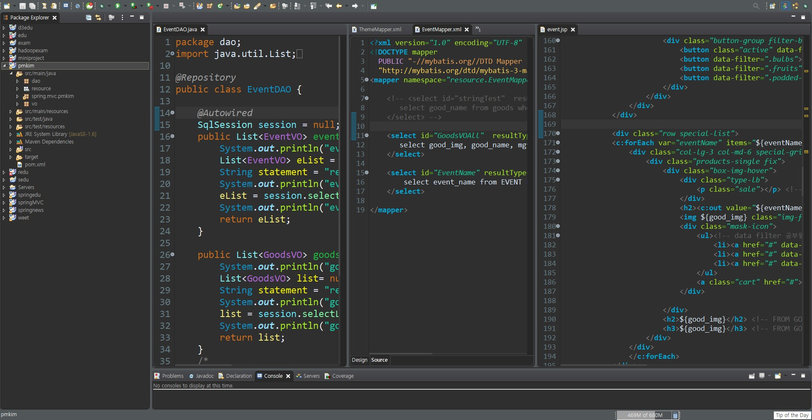
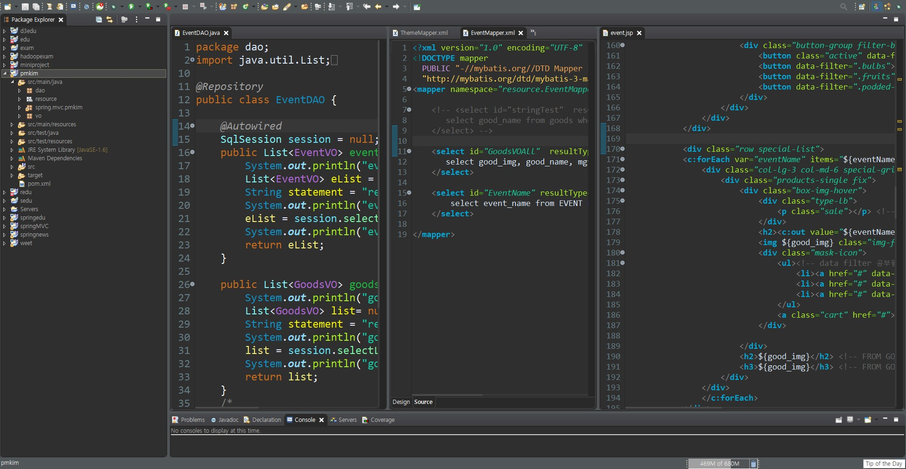

Education
⚑ 2016-03 ~ 2020-08
B.A. Yonsei University East Asian International Studies
Business and Economic Track
연세대학교 동아시아국제학부 (경영/경제 트랙) 수료
⚑ 2019-11 ~ 2020-07
Samsung SDS Multicampus / 삼성 SDS 멀티캠퍼스
삼성 SDS 멀티캠퍼스 Open API를 활용한 빅데이터 전처리-시각화
▪︎ Before graduation, I was picked to take course of "Bigdata Platform using Open API" among hundred of applicants, which is based on Web and Bigdata Analysis held by Samsung SDS Multicampus. I have been learning Java, SQL, HTML, CSS, JavaScript, JSP, Spring MVC, D3, SVG, My Batis, Leaflet, Linux, Hadoop, Spark, Scala, Python, R.
Work
⚑ 2019-01 ~ 2019-08
Starbucks Korea Retail Store /스타벅스코리아
Partner, Baristar
▪︎ I elevated customer loyalty by using strong Asian Language skills like Korean,
Japanese, Chinese and also English. I was the only one and youngest who is able to
communicate with various languages at the store, and even since the store was
located at Hongik University which is the most famous traveling spot in Seoul, South
Korea. Although it makes me work harder than any other franchise stores, I was lucky
to have much opportunity to talk with a variety kind of people from all around the
world. It gave me the strong speaking ability and an ability to react quickly.
▪︎ Coworkers are calling me “the most suitable worker at this neighborhood.”
▪︎ I have big smile which is my strength. it was not difficult for me to have deep or
small talk between customer and my position. Thanks to my reacting, I have gotten
ranking 4th and 14th on the Partner Competition. They all happened only during a
month. Some of customers were coming to meet me. My service were marked as the
best at the zone where I worked so I have an opportunity to work at support center.
▪︎ Through my own experience at Starbucks retail shop, I can get powered up every
moment. By talking with many music, art college students, I can re-awake my passion
in studying arts which was my main major before entering into college. After that, I
am studying both software programming and designing. My passion leads me to do
my best at everywhere such as working or studying.
⚑ 2018-07 ~ 2018-11
English Tutoring for Musical actors / 뮤지컬배우 영어과외
▪︎I taught English Speaking and reading skills to musical actors and actresses. The
reason why they learned language is that they had a dream to act in broad way
located in Manhattan. I was just an Instructor, but the power and passion of them
led me also fall in a section that I wanted to become or learn.
▪︎Some of my students had a chance to act musical “Cats.” It was so excited to lead
students to achieve their own precious dream.
⚑ 2018-07 ~ 2018-11
Music Producing / 음반 프로듀싱
▪︎ I was teaching English to musical actors and actress. On the way to teach them, I
have a chance to visit studio and make music together. That was a chance me to join
in thinking of music notes and lyrics.
▪︎ I am not official composer and writer, but participate played the piano and guitar
and cello for music record.
▪︎ In order to raise this interest, I am always trying to make music notes whenever a
song thinks of.
⚑ 2017-09 ~ 2018-06
Yonsei Univ. Teaching Assistant / RA수업 학생강사
TA, leading the class of music
▪︎ I was only Sophomore, but thanks to my experience about music in young, I was the
youngest and delegating piano player among TAs.
▪︎ I am able to play Jazz, Classic, pop, Choir, and anything that students and professor
want. And also, as I was leader of TA, I can grow my leadership through every single
class.
▪︎ Were not only playing the piano but also composing my works. Thanks to my
experience of learning Computer Science, I can use Python as my main tool to create
music note. It was becoming one of the reasons why I am dreaming to become a
person who will learn computer programming for some other works that I would like
to achieve.
⚑ 2017-09 ~ 2018-06
Yonsei Univ. Student Officer / 행정팀 정보근로학생
Student officer, web publishing and documentation
▪︎ College administration needed a student who can retain and recreate a homepage.
In Economic and Business department, I was only one who can use HTML and CSS
and JavaScript. I volunteered to become a student officer also including during winter
and summer session.
▪︎ It was not easy at first, but time goes by, I can raise my ability like how to deal with
function of java script and what kind of sources are not giving huge effects on the
serve. These experience made me take leader position as many as possible.
⚑ 2016-03 ~ 2016-06
English Tutoring / 국문과 교수님 영어과외
College professors whose major teaching course is Korean Literature
▪︎ I coached professors from Korean Literature because they needed scores in order
to teach the courses abroad. I was suitable student instructor since I have been
studying English only in Korea for 20 years. They would like to get some tips how to
study English in Korea as old people who did not have to learn how to speak and write
English when they are in young.
▪︎ It was not easy, but they were so enthusiastic in learning. I was teaching English
grammar first because without the normal form, they were not able to make their own
story.
▪︎ Finally, we all could go to the abroad to teach. This experience also gave me a
wisdom that all people have passion to learn. So, I thought that If there is something I
really want to try and achieve whenever I feel, I will go for it. And this thought led me
to doing as much experience as possible in college.
⚑ 2016-03 ~ 2017-04
Yonsei Univ. Student Council Design Leader / 홍보국 팀장
Designer and Planner using Adobe program
▪︎ As design team leader, I studied Adobe Premiere Pro, Illustrator, Photoshop,
Indesign. I, in fact, can handle these tools before, but in order to improve my talent, I
took course of design program at school with media and art students.
▪︎ Thanks to this experience, I created formal presentation and logo form for younger
generation. It was big success because I could sell the highest number of my
division’s jacket and T-Shirts. After that, students are using my tool when they work.
⚑ 2015-11 ~ 2018-03
English Interview Private Institution / SK명문학원
Instructor teaching TOEFL, TOEIC, TEPS, English/Korean Interview
▪︎ For 4 years, I was English Instructor of teaching English speaking and Interview. The
reason why I was working in college is that I would like to give to students that “even
though you were not studying abroad, with effort and passion, you can achieve many
things that you plan.” I was working headquarter and helped CEO to make franchise at
Jeju Island.


 


 


 



 
